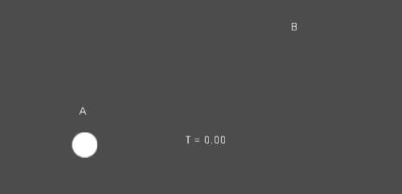
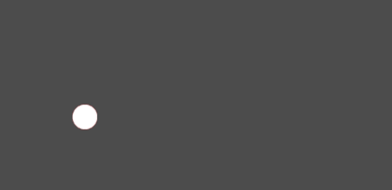

Interpolation
Interpolation is a common operation in graphics programming, which is used to blend or transition between two values. Interpolation can also be used to smooth movement, rotation, etc. It's good to become familiar with it in order to expand your horizons as a game developer.
The basic idea is that you want to transition from A to B. A value t, represents the states in-between.
For example, if t is 0, then the state is A. If t is 1, then the state is B. Anything in-between is an interpolation.
Between two real (floating-point) numbers, an interpolation can be described as:
interpolation = A * (1 - t) + B * t
And often simplified to:
interpolation = A + (B - A) * t
The name of this type of interpolation, which transforms a value into another at constant speed is "linear". So, when you hear about Linear Interpolation, you know they are referring to this formula.
There are other types of interpolations, which will not be covered here. A recommended read afterwards is the Bezier page.
Vector interpolation
Vector types (Vector2 and Vector3) can also be interpolated, they come with handy functions to do it Vector2.lerp() and Vector3.lerp().
For cubic interpolation, there are also Vector2.cubic_interpolate() and Vector3.cubic_interpolate(), which do a Bezier style interpolation.
Here is example pseudo-code for going from point A to B using interpolation:
var t = 0.0
func _physics_process(delta):
t += delta * 0.4
$Sprite2D.position = $A.position.lerp($B.position, t)
private float _t = 0.0f;
public override void _PhysicsProcess(double delta)
{
_t += (float)delta * 0.4f;
Marker2D a = GetNode<Marker2D>("A");
Marker2D b = GetNode<Marker2D>("B");
Sprite2D sprite = GetNode<Sprite2D>("Sprite2D");
sprite.Position = a.Position.Lerp(b.Position, _t);
}
It will produce the following motion:

Transform interpolation
It is also possible to interpolate whole transforms (make sure they have either uniform scale or, at least, the same non-uniform scale). For this, the function Transform3D.interpolate_with() can be used.
Here is an example of transforming a monkey from Position1 to Position2:

Using the following pseudocode:
var t = 0.0
func _physics_process(delta):
t += delta
$Monkey.transform = $Position1.transform.interpolate_with($Position2.transform, t)
private float _t = 0.0f;
public override void _PhysicsProcess(double delta)
{
_t += (float)delta;
Marker3D p1 = GetNode<Marker3D>("Position1");
Marker3D p2 = GetNode<Marker3D>("Position2");
CSGMesh3D monkey = GetNode<CSGMesh3D>("Monkey");
monkey.Transform = p1.Transform.InterpolateWith(p2.Transform, _t);
}
And again, it will produce the following motion:

Smoothing motion
Interpolation can be used to smoothly follow a moving target value, such as a
position or a rotation. Each frame, lerp() moves the current value towards
the target value by a fixed percentage of the remaining difference between the values.
The current value will smoothly move towards the target, slowing down as it gets
closer. Here is an example of a circle following the mouse using interpolation smoothing:
const FOLLOW_SPEED = 4.0
func _physics_process(delta):
var mouse_pos = get_local_mouse_position()
$Sprite2D.position = $Sprite2D.position.lerp(mouse_pos, delta * FOLLOW_SPEED)
private const float FollowSpeed = 4.0f;
public override void _PhysicsProcess(double delta)
{
Vector2 mousePos = GetLocalMousePosition();
Sprite2D sprite = GetNode<Sprite2D>("Sprite2D");
sprite.Position = sprite.Position.Lerp(mousePos, (float)delta * FollowSpeed);
}
Here is how it looks:

This is useful for smoothing camera movement, for allies following the player (ensuring they stay within a certain range), and for many other common game patterns.
Note
Despite using delta, the formula used above is framerate-dependent, because
the weight parameter of lerp() represents a percentage of the remaining
difference in values, not an absolute amount to change. In _physics_process(),
this is usually fine because physics is expected to maintain a constant framerate,
and therefore delta is expected to remain constant.
For a framerate-independent version of interpolation smoothing that can also
be used in process(), use the following formula instead:
const FOLLOW_SPEED = 4.0
func _process(delta):
var mouse_pos = get_local_mouse_position()
var weight = 1 - exp(-FOLLOW_SPEED * delta)
$Sprite2D.position = $Sprite2D.position.lerp(mouse_pos, weight)
private const float FollowSpeed = 4.0f;
public override void _Process(double delta)
{
Vector2 mousePos = GetLocalMousePosition();
Sprite2D sprite = GetNode<Sprite2D>("Sprite2D");
float weight = 1f - Mathf.Exp(-FollowSpeed * (float)delta);
sprite.Position = sprite.Position.Lerp(mousePos, weight);
}
Deriving this formula is beyond the scope of this page. For an explanation, see Improved Lerp Smoothing or watch Lerp smoothing is broken.